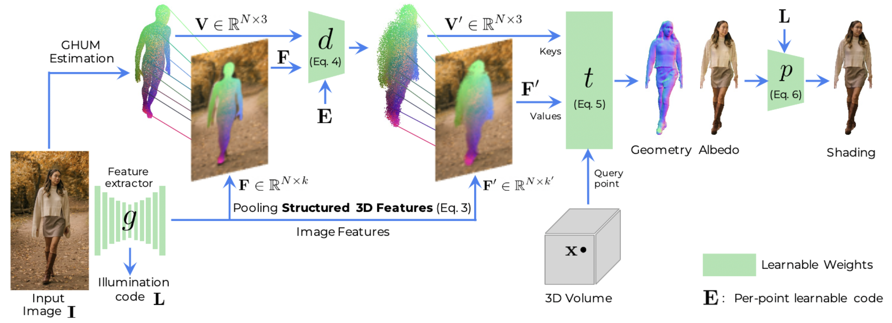
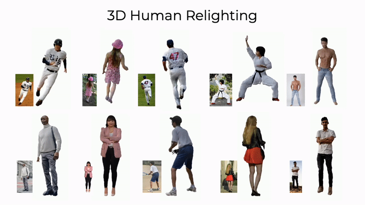

Structured 3D Features for Reconstructing Relightable and Animatable Avatars
Enric Corona, Mihai Zanfir, Thiemo Alldieck,
Eduard Gabriel Bazavan, Andrei Zanfir, Cristian Sminchisescu
CVPR 2023
description Paper description Project play_circle_filled Video

Abstract
We introduce Structured 3D Features, a model based on a novel implicit 3D representation that pools pixel-aligned image features onto dense 3D points sampled from a parametric, statistical human mesh surface. The 3D points have associated semantics and can move freely in 3D space. This allows for optimal coverage of the person of interest, beyond just the body shape, which in turn, additionally helps modeling accessories, hair, and loose clothing. Owing to this, we present a complete 3D transformer-based attention framework which, given a single image of a person in an unconstrained pose, generates an animatable 3D reconstruction with albedo and illumination decomposition, as a result of a single end-to-end model, trained semi-supervised, and with no additional postprocessing.
We show that our S3F model surpasses the previous state-of-the-art on various tasks, including monocular 3D reconstruction, as well as albedo and shading estimation. Moreover, we show that the proposed methodology allows novel view synthesis, relighting, and re-posing the reconstruction, and can naturally be extended to handle multiple input images (e.g. different views of a person, or the same view, in different poses, in video). Finally, we demonstrate the editing capabilities of our model for 3D virtual try-on applications.
How do Structured 3D Features work?

In this paper we introduce 3D Structure Features (S3F), a flexible extension to image features (e.g. pixel-aligned), specifically designed to tackle the task of 3D human reconstruction and provide more flexibility during and after digitization. S3F store local features on ordered sets of points around the body surface, taking advantage of the geometric body prior. As body models do not usually represent hair or loose clothing, it is difficult to recover accurate body parameters for images inthe-wild. To this end, instead of relying too much on the geometric body prior, our model freely moves 3D body points independently to cover areas that are not well represented by the prior. This process results in our novel S3Fs, and is trained without explicit supervision only using reconstruction losses as signals.
Given an input point, we aggregate representations from the set of points and their features using a transformer architecture, and obtain per-point signed distance and albedo color. Finally, we can relight the reconstruction using the predicted albedo and an illumination code. We assume perspective projection to obtain more natural reconstructions, with correct proportions.
Results
Monocular 3D Human Reconstruction:

The proposed approach can take images with people in unconstrained body poses and reconstruct details such as loose clothing or hair (See the paper for more examples). Moreover, the reconstructions can be animated or relighted.
Shading estimation:

Our method recovers albedo and shading given each input image, and is robust to challenging poses or in-the-wild images.
Applications
3D Human Relighting:
After predicting albedo, we relight the 3D reconstructions using different illumination codes. All reconstructions are relighted consistently.
3D Human Animation:

The proposed Structured 3D Features are located near the body and inherit the properties of parametric body models, such as skinning weights. Therefore, after pooling per-point representations in the original image, we can pose them to new poses and animate reconstructions, just from a single input image.
3D Virtual try-on:

Given an image of a target person, we identify S3Fs that project inside upper-body cloth segmentation masks, and replace their feature vectors for those obtained from other subjects. This leads to cloth retargeting and could be useful for 3D virtual try-on applications. Please watch video for more examples and details.
Publication

Structured 3D Features for Reconstructing Relightable and Animatable Avatars
Enric Corona, Mihai Zanfir, Thiemo Alldieck, Eduard Gabriel Bazavan, Andrei Zanfir and Cristian Sminchisescu
in IEEE Conference on Computer Vision and Pattern Recognition (CVPR), 2023
Project Page Paper Supplementary Video Bibtex
@inproceedings{corona2023s3f,
Author = {Corona, Enric and Zanfir, Mihai and Alldieck, Thiemo and Gabriel Bazavan, Eduard and Zanfir, Andrei and Sminchisescu, Cristian}
Title = {Structured 3D Features for Reconstructing Relightable and Animatable Avatars},
Year = {2023},
booktitle = {CVPR},
}
Citation
@inproceedings{corona2023s3f,
Author = {Corona, Enric and Zanfir, Mihai and Alldieck, Thiemo and Gabriel Bazavan, Eduard and Zanfir, Andrei and Sminchisescu, Cristian}
Title = {Structured 3D Features for Reconstructing Relightable and Animatable Avatars},
Year = {2023},
booktitle = {CVPR},
}